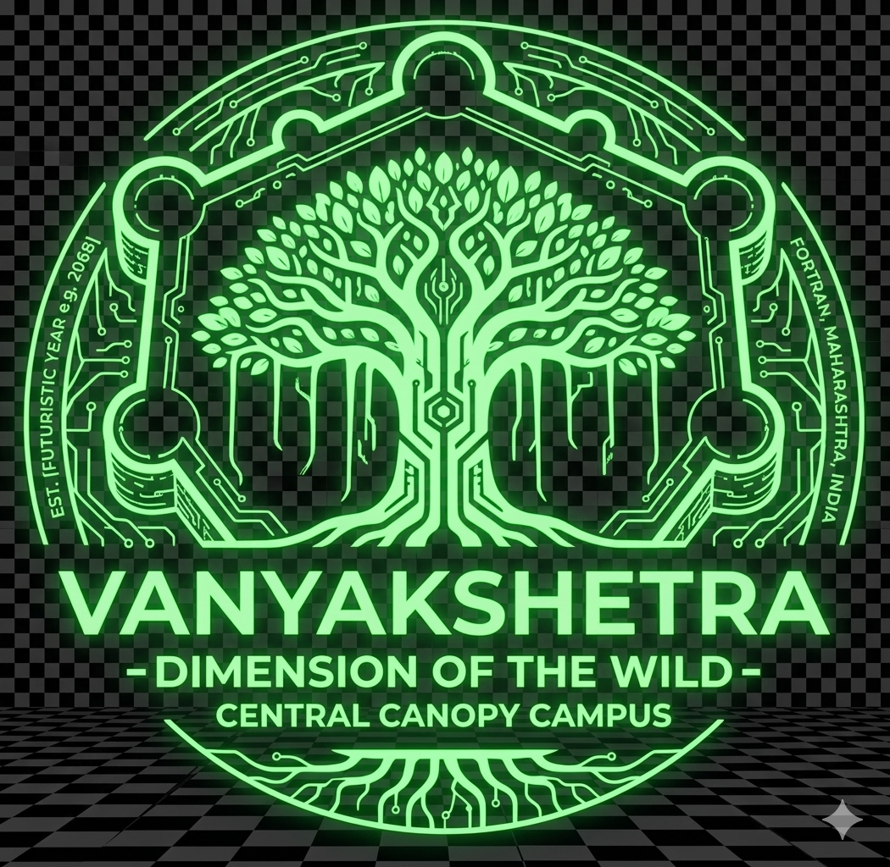
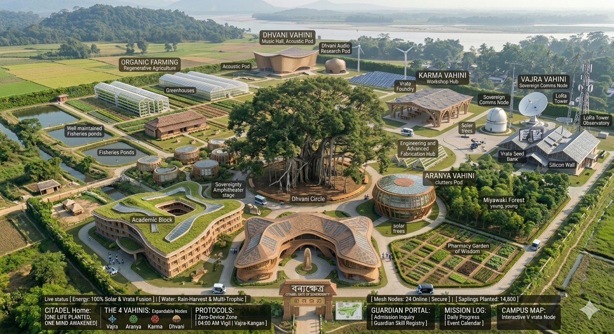

Rooted in the Banyan, Wired for the Stars. A Modern Gurukul where character is the foundation and innovation is the weapon.
Motto: THE SILENT SIGNAL, THE SOVEREIGN MIND.
Objective: To build a decentralized, off-grid communication network independent of global surveillance.
Motto: ROOTED IN EARTH, ARMED WITH LIFE.
Objective: To restore the native biosphere and engineer self-sustaining food and medicinal supplies
Motto: ENERGY IS ACTION, MATTER IS CLAY.
Objective: To achieve 100% energy independence and fabricate the Citadel’s physical hardware.
Motto: THE WORD IS VIBRATION, THE VIBRATION IS POWER.
Objective: To master the arts, music, and dance as tools for cultural preservation and communal harmony.
The Mission: Win the day before it starts. The Action: Every cadet rises at 4:00 AM to sync their body and mind. This "Zero Hour" is reserved for intense focus, physical training, and meditation while the rest of the world is still asleep.
The Mission: Stay connected when the world goes dark. The Action: We don’t rely on big-tech internet. During emergencies or surveillance, we switch to our private "Vajra" network—an encrypted, off-grid radio system (LoRa) that keeps the Citadel talking even if the grid fails.
The Mission: Farm with the pulse of nature. The Action: We don’t just plant trees; we sync our work with the moon and sound frequencies. By matching our farming to nature’s natural clocks, our Miyawaki forests and medicinal gardens grow stronger and faster.
The Mission: Go invisible. The Action: If unauthorized drones or scanners are detected in our "Akasha" (airspace), we initiate a total digital blackout. All devices go into shielded mode so the Citadel disappears from enemy radar and heat-maps.
The Mission: Keep the machines alive. The Action: "Loha" (Iron) meets "Vriksha" (Tree). Every week, we perform deep-system checks on our solar power grids and signal towers to ensure our technology lives in perfect harmony with the jungle.
The Mission: Build an unbreakable mind. The Action: Stress is the enemy. Through synchronized breathing and acoustic (sound) training, the entire community aligns its energy. This builds a human "firewall" that keeps the group calm and focused during a crisis.
The Mission: Record the truth. The Action: Every step of our journey is recorded in a secure, digital ledger. This ensures that the 100 Founders can see exactly how the mission is progressing, keeping our history transparent and unchangeable.

[ 100_FOUNDERS_REQUIRED_FOR_SYSTEM_OVERRIDE ]
[ ENCRYPTED CHANNEL OPEN FOR EXTERNAL INQUIRY ]